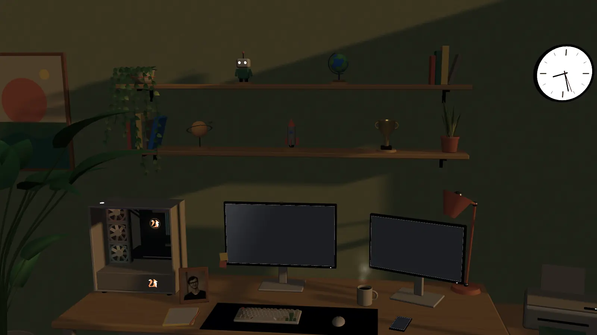

2026 · Conception et développement
Mon portfolio sous la forme d’un bureau en 3D, à explorer au clavier, à la souris ou au toucher.

Au chargement, l’ordinateur s’allume puis l’écran affiche mon profil. Chaque objet du bureau ouvre un contenu : les projets sur les étagères, un terminal sur le second écran, le contact sur le smartphone, le CV à l’imprimante et l’ambiance jour ou nuit avec la lampe.
Toute la scène est modélisée en code, sans modèle 3D ni texture à télécharger. Son contenu est généré à partir de ce site.
L’idée est venue en découvrant des projets similaires, des CRM d’entreprise en 3D : ils m’ont donné envie de faire une version de mon portfolio en 3D.
Le but était de pouvoir tout voir en un clic : chaque objet du bureau ouvre directement son contenu, qu’il s’agisse du profil, des projets, du parcours, du contact ou du CV.